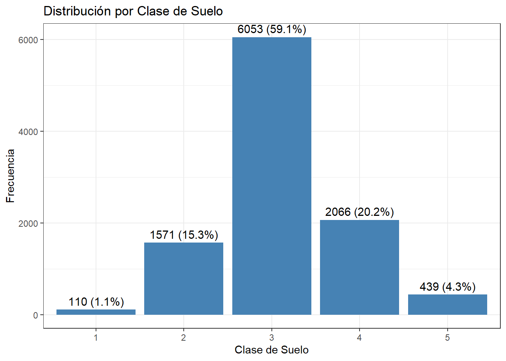
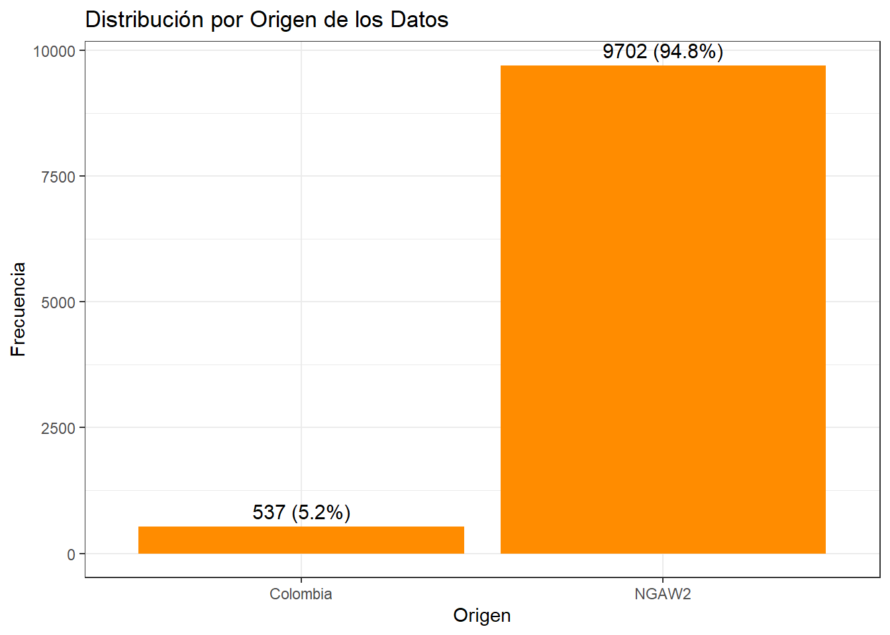
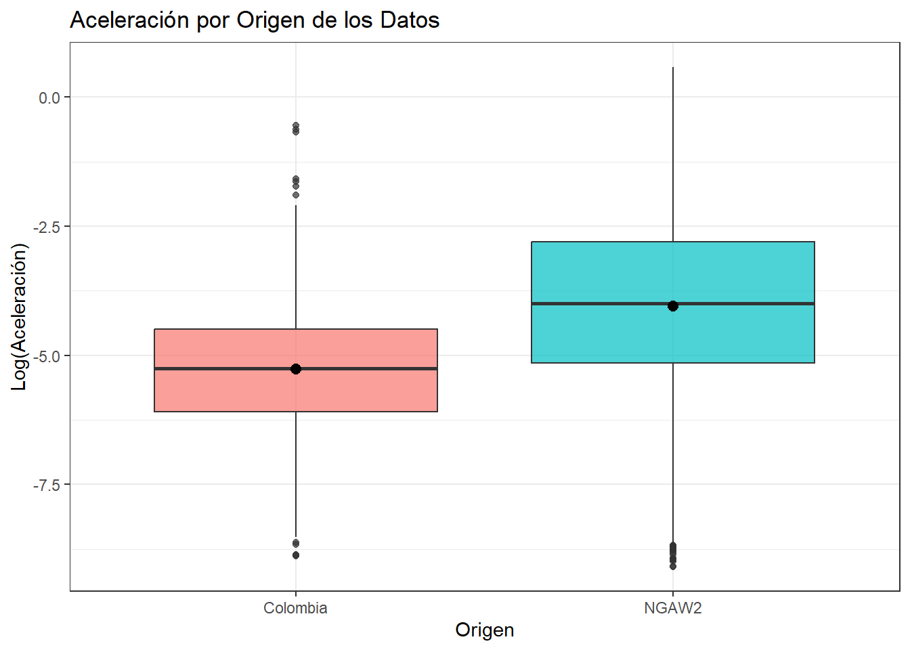

Capítulo 2 Visualización de Variables Categóricas
Las variables categóricas se visualizan con gráficos de barras, que permiten comparar la frecuencia de cada categoría y detectar desbalances en los datos.
2.1 Distribución por Clase de Suelo
datos %>%
count(Soil_Class) %>%
mutate(Porcentaje = (n / sum(n)) * 100) %>%
ggplot(aes(x = factor(Soil_Class), y = n)) +
geom_col(fill = "steelblue") +
geom_text(aes(label = paste0(n, " (", round(Porcentaje, 1), "%)")),
vjust = -0.5, size = 4) +
labs(title = "Distribución por Clase de Suelo",
x = "Clase de Suelo",
y = "Frecuencia") +
theme_bw()
Interpretación: La mayoría de los registros sísmicos corresponden a la Clase de Suelo 3 (59.1%), seguida por la Clase 4 (20.2%) y la Clase 2 (15.3%). Las clases 1 y 5 tienen muy poca representación. El análisis está fuertemente influenciado por el suelo tipo 3.
2.2 Distribución por Origen de los Datos
datos %>%
count(origen) %>%
mutate(Porcentaje = (n / sum(n)) * 100) %>%
ggplot(aes(x = factor(origen), y = n)) +
geom_col(fill = "darkorange") +
geom_text(aes(label = paste0(n, " (", round(Porcentaje, 1), "%)")),
vjust = -0.5, size = 4) +
labs(title = "Distribución por Origen de los Datos",
x = "Origen",
y = "Frecuencia") +
theme_bw()
Interpretación: El 94.8% de los registros proviene de la base de datos NGAW2 (norteamericana), mientras que el 5.2% corresponde a Colombia. Esta asimetría es importante al momento de generalizar conclusiones, ya que el conjunto está dominado por sismicidad de contexto norteamericano.
2.3 Covariación: Aceleración por Origen
ggplot(datos, aes(x = factor(origen), y = T_0.01_RotD50, fill = origen)) +
geom_boxplot(alpha = 0.7) +
stat_summary(fun = mean, geom = "point", shape = 20, size = 4, color = "black") +
labs(title = "Aceleración por Origen de los Datos",
x = "Origen",
y = "Log(Aceleración)") +
theme_bw() +
theme(legend.position = "none")
Interpretación: Los registros de Colombia presentan un rango de aceleración similar al de NGAW2, aunque con diferencias en la mediana. Esta comparación es relevante para evaluar si los datos colombianos se comportan de forma consistente con los norteamericanos en términos de atenuación sísmica.